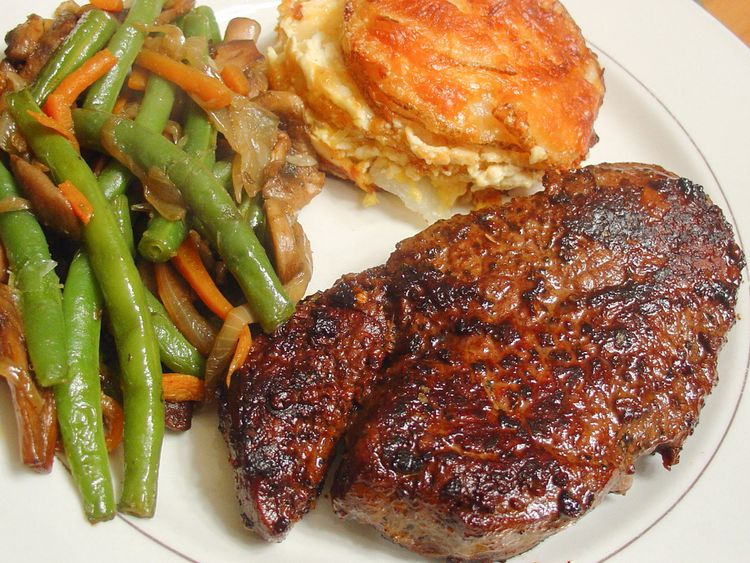

Barbeque New York Strip
Description
A quick and easy way to make a tasty, tender NY strip steak on the grill! Marinate for a minimum of 2 hours.
Recipe by RUSS4433 | Updated on January 29, 2023
Ingredients
- 4 (6 ounce) New York strip steaks
- ½ cup extra virgin olive oil
- ½ cup Worcestershire sauce
- ¼ cup steak seasoning
- 4 tablespoons minced garlic
- 1 tablespoon red wine vinegar
- ½ teaspoon dried basil
- ½ teaspoon Italian seasoning
Steps
- Pierce steaks on all sides with a fork.
- Whisk olive oil, Worcestershire sauce, steak seasoning, garlic, vinegar, basil, and Italian seasoning together in a bowl and pour into a resealable plastic bag. Add steaks, coat with the marinade, squeeze out excess air, and seal the bag. Marinate in the refrigerator for at least 2 hours.
- When ready to cook, preheat an outdoor grill for high heat and lightly oil the grate.
- Remove steaks from the marinade and shake off excess. Discard the remaining marinade.
- Cook steaks on the preheated grill for 7 minutes on each side, or to desired doneness.
Cook's Note:
Nutrition data for this recipe includes the full amount of marinade ingredients. The actual amount of marinade consumed will vary.